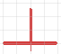
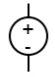
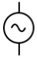
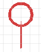
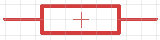
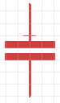
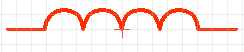
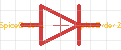
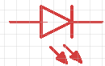
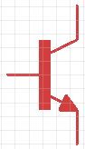

Electrical and Magnetic Quantities
Before diving into building circuits, it's important to understand some fundamental electrical and magnetic quantities that are commonly used in electronics. These quantities help us describe and analyze the behavior of electrical circuits and components.
Here are some of the key electrical and magnetic quantities you should be familiar with:
-
●
Electric Quantities:
- Electric charge A fundamental property of matter that causes it to experience a force when placed in an electric field, measured in coulombs (C) and represented by "Q". In simple terms, it can be thought of as the "quantity" of electricity, where a higher charge indicates more electric particles present.
- Electric voltage In electrical terms is a potential difference between two points in a circuit, measured in volts (V) and it's represented by the symbol "V" in American English and "U" in European English. In simple terms, it can be thought of as the "pressure" that pushes electric charges through a conductor, enabling the flow of current.
- Electric current The flow of electric charge through a conductor, measured in amperes (A) and represented by "I". It represents the rate at which electric charges pass through a point in a circuit. There are two types of electric current: direct current (DC), where the flow of charge is in one direction, and alternating current (AC), where the flow of charge periodically reverses direction. In simple terms, it can be thought of as the "flow" of electricity, where a higher current indicates a greater flow of electric charge.
- Electric resistance The opposition to the flow of electric current, measured in ohms (Ω) and represented by "R". It determines how much current will flow for a given voltage, the rest will turn to heat. In simple terms, it can be thought of as the "friction" that impedes the flow of electricity, where a higher resistance results in less current flow for a given voltage.
- Electric power The rate at which electrical energy is transferred or consumed, measured in watts (W) and represented by "P". In simple terms, it can be thought of as the "work" done by electricity, where a higher power indicates more energy being transferred or consumed.
- Electric conductance The reciprocal of resistance, measured in siemens (S) and represented by "G". In simple terms, it can be thought of as the "ease" with which electricity flows through a conductor, where a higher conductance indicates less resistance and easier flow of electric current.
- Electric energy The capacity to do work, measured in joules (J) and represented by "E". In simple terms, it can be thought of as the "fuel" that powers electrical devices, where a higher energy indicates more capacity to perform work.
- Electric capacity The ability of a system to store electric charge, measured in farads (F) and represented by "C". In simple terms, it can be thought of as the "storage" for electricity, where a higher capacity indicates a greater ability to store electric charge.
- Electric inductance The property of a conductor that opposes changes in current, measured in henries (H) and represented by "L". In simple terms, it can be thought of as the "inertia" of electricity, where a higher inductance indicates a greater opposition to changes in current flow.
- Magnetic flux The total magnetic field passing through a given area, measured in webers (Wb) and represented by "Φ". In simple terms, it can be thought of as the "amount" of magnetism, where a higher magnetic flux indicates a stronger magnetic field passing through an area.
-
●
Magnetic Quantities:
- Magnetic flux The total magnetic field passing through a given area, measured in webers (Wb) and represented by "Φ". In simple terms, it can be thought of as the "amount" of magnetism, where a higher magnetic flux indicates a stronger magnetic field passing through an area.
- Magnetic field strength The intensity of a magnetic field, measured in teslas (T) and represented by "B". In simple terms, it can be thought of as the "strength" of magnetism, where a higher magnetic field strength indicates a stronger magnetic field.
- Magnetic permeability The ability of a material to support the formation of a magnetic field, measured in henries per meter (H/m) and represented by "μ". In simple terms, it can be thought of as the "friendliness" of a material to magnetism, where a higher magnetic permeability indicates that the material allows magnetic fields to pass through it more easily.
- Magnetic reluctance The opposition to the creation of a magnetic field in a material, measured in ampere-turns per weber (At/Wb) and represented by "R_m". In simple terms, it can be thought of as the "resistance" to magnetism, where a higher magnetic reluctance indicates that the material opposes the formation of a magnetic field more strongly.
- Magnetic energy The energy stored in a magnetic field, measured in joules (J) and represented by "E_m". In simple terms, it can be thought of as the "potential" of magnetism, where a higher magnetic energy indicates that more energy is stored in the magnetic field.
- Magnetic force The force exerted by a magnetic field on moving charges or other magnets, measured in newtons (N) and represented by "F_m". In simple terms, it can be thought of as the "push" or "pull" of magnetism, where a higher magnetic force indicates a stronger interaction between the magnetic field and charged particles or other magnets.
- Magnetic moment A measure of the strength and orientation of a magnet's magnetic field, measured in ampere-square meters (A·m²) and represented by "m". In simple terms, it can be thought of as the "personality" of a magnet, where a higher magnetic moment indicates a stronger and more oriented magnetic field.
Common Electrical Terms and Symbols
In addition to understanding the fundamental electrical and magnetic quantities, it's also important to familiarize yourself with common electrical terms and symbols that are used in circuit diagrams and electronics discussions. These terms and symbols help us communicate effectively about electronic components, circuits, and concepts.
Here are some common electrical terms and symbols you should know:
-
Ground
A reference point in an electrical circuit from which voltages are measured, a common return path for electric current.
In simple terms, it can be thought of as the "zero" point in a circuit, where all voltages are measured relative to it and it provides a path for current to return to the source.

Ground Symbol -
Power Supply
A source of electrical power for the circuit, providing the necessary voltage and current.
In simple terms, it can be thought of as the "heart" of a circuit, where it provides the energy needed for the circuit to function.

Power Supply Symbol (DC) 
Power Supply Symbol (AC) -
Pin symbol
A symbol representing a connection point on a your RPI by number

Pin Symbol -
Resistor
A component that resists the flow of electric current, used to control voltage and current in a circuit.
In simple terms, it can be thought of as the "brake" of a circuit, where it limits the flow of electricity to protect other components and control the behavior of the circuit.

Resistor Symbol -
Capacitor
A component that stores and releases electrical energy, used for filtering, timing, and energy storage in circuits.
In simple terms, it can be thought of as the "battery" of a circuit, where it temporarily stores electrical energy and releases it when needed to smooth out voltage fluctuations or provide power during brief interruptions.

Capacitor Symbol -
Inductor
A component that stores energy in a magnetic field when electric current flows through it, used for filtering, energy storage, and inductive coupling in circuits.
In simple terms, it can be thought of as the "coil" of a circuit, where it creates a magnetic field that can store energy and oppose changes in current flow, making it useful for filtering and energy storage applications.

Inductor Symbol -
Diode
A component that allows current to flow in one direction only, used for rectification, signal modulation, and protection in circuits.
In simple terms, it can be thought of as the "one-way valve" of a circuit, where it permits the flow of electricity in one direction while blocking it in the opposite direction, making it essential for controlling current flow and protecting components from reverse voltage.

Diode Symbol -
LED diode
A type of diode that emits light when current flows through it, used for indication and display purposes in circuits.
In simple terms, it can be thought of as the "light bulb" of a circuit, where it produces light when electricity flows through it, making it useful for visual indicators and displays.

LED Symbol -
Transistor
A semiconductor device used to amplify or switch electronic signals, essential for building complex circuits and digital logic.
In simple terms, it can be thought of as the "amplifier" or "switch" of a circuit, where it can control the flow of electricity based on an input signal, making it fundamental for amplification and digital logic applications.

Transistor Symbol